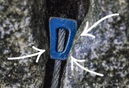

How to Choose Climbing Nuts, Stoppers and Chocks
If you’re an aspiring trad climber setting up your rack, you’ll want to get a wide range of protection gear (aka: “pro.”) This will include both active pro (pieces with moving parts) and passive pro (no moving parts). This article will focus on passive pro, but it’s also important to understand the role each type of pro plays.
The Roles of Passive and Active Pro
It’s important to have both active and passive pro in your rack. Here’s why:
Advantages of Passive Pro
Why buy passive protection, when active pro such as spring-loaded camming devices (SLCDs) are so secure and easy to place? Climbers also need passive pro for a few reasons:
To set a placement in a widening crack: SLCDs have been known to walk themselves out in this scenario. Hexes (a type of passive pro) sometimes turn out to be the more secure option.
To save weight and money: A rack with a full set of nuts, hexes and other specialized pieces will weigh much less than one with the same number of SLCDs. It will also be less bulky and far more affordable.
To minimize the cost of leaving pro behind: Occasionally people choose to leave behind pro. A climber might have to back off a climb, or be required to do an unexpected rappel. Better to leave behind a ten-dollar nut than a hundred-dollar SLCD.
Advantages of Active Pro
SLCDs have a broader working range than nuts and hexes, and they fit in pockets and parallel cracks more readily than most passive pro. Additionally, their holding power actually increases when a fall exerts a dynamic force on them. So, when placed properly, they can be more secure.
To learn more about active protection, see Active Rock Climbing Protection: How to Choose.
Types of Passive Pro
Nuts, the mainstay of passive pro, have many alternative names, including chocks, stoppers and tapers. All of these terms for basic passive pro refer to some variety of a tapered metal wedge attached to a wire cable that has a loop on the end.
The wedge gets slipped into a crack and the other end gets linked to an anchor. The wedge is engineered to jam solidly into place when a load is placed on the nut’s wire. Some nuts also have cutout areas for better fit on uneven rock surfaces.
Nuts come in sizes ranging from 1 through 13. Exact dimensions for each size vary slightly, depending on the nut maker and the nut shape. Some brands also make an even smaller size 0 nut. Generally, any nut below size 7 is considered a micro nut. Starter nut sets include a few larger micro nut sizes in the assortment.
Other passive pro includes tri-cams, Hexentrics® (hexes) and tube chocks. Each employs a noticeably different wedge-end shape than you find on a typical nut. These specialized pieces can help you get a solid placement in situations where standard nuts might fail to hold.
Passive Pro Placement Tips
Nuts
A nut works best in tapering narrow- to medium-width cracks.

Curved Aluminum Nuts: The most common nut style has an aluminum-alloy wedge that has slightly curved faces: One side is convex and the opposite side is concave. The convex side combines with two contact points on the concave side, creating a triangulation of forces that locks the nut in place.
Offset Nuts: Rather than curved surfaces, these feature a wedge with a top-to-bottom taper and a front-to-back taper. This shape is considered more secure in flares and pin scars.
Micro Nuts
A micro nut is used where no other protection will fit. Smaller than a standard nut, it’s used in thin cracks and old piton scars. Most micro nuts can hold only body weight, not the dynamic force of a fall. Thus they are used primarily by aid climbers, who often buy them in sets of nut sizes 1 through 6.
Brass and Copper Nuts: Micro nuts’ tiny size makes it challenging to have sufficient surface area to get a good hold. So, you see nuts with softer metals, such as brass and copper that can mold to the shape of the rock, which increases contact area and creates a more secure placement.
Hexentrics

A hex can be used in both tapering and parallel-sided cracks, as well as widening cracks. An asymmetrical six-sided tube, a hex is placed like a nut: directly into a narrowing section of the crack. A downward pull on the wire rotates the hex and wedges it tightly in the crack. This rotational placement allows it to get a secure hold in a parallel-sided crack.
Tri-Cams

A tri-cam can be placed in a parallel-sided crack, a pocket or a horizontal crack. Rounded on one side and having a point on the other, it’s useful in cracks that are too large or straight-sided for a nut to hold well. Unlike a nut, a tri-cam has a sling, rather than a wire for connecting to an anchor. Unlike a spring-loaded cam, it has no moving parts.
A tri-cam is placed directly into a crack and cammed into place. Force applied to the sling rocks the curved edge and forces the point into the rock. Placing tri-cams takes practice, but once the technique is mastered they can be very useful.
Tube Chocks

Suited to parallel-sided cracks or pockets, a tube chock is the go-to piece for extra-wide placements. Tube chocks are available in sizes that work in cracks ranging from 3” wide to 12” wide.
A tube chock works like a curtain rod in a shower stall, using its powerful spring-loaded mechanism to expand and firmly lodge the ends into place. A locking collar holds it at the desired width. Tube chocks resist pull in any direction, so they can be used in vertical, horizontal and angled cracks.
Passive Pro Buying Tips

Start by buying a set of nuts. For around $100 or so, you get 10 or 11 different sizes. This will be less expensive than buying the individual sizes.
After that, experience and experimentation will help you decide which additional sizes you need, which sizes you need to duplicate and which other types of pro you want to add. You can get a good idea of an appropriate mix by checking with other people who frequent your favorite climbing areas.
Stretch your initial pro assortment by back cleaning. When a nut size is needed in more than one placement, simply get lowered down to the already placed piece of pro you need. If you find certain sizes always seem to be needed, then double or triple up on those sizes before the next climb.
Buy a nut-removal tool. Because it minimizes stress and wear on nut wires, using a nut tool is preferable to yanking them out. And it’s not always possible to remove a nut by simply lifting it out of a placement.
To learn how to organize and carry your pro while climbing, read Gear Racking Basics.
Passive Pro Lifespan
With moderate use and no major incidents, the average lifespan of passive pro is at least five years. The actual lifespan of a specific piece depends on how frequently you use it and whether or not it incurs damage. Inspect pieces and replace them if:
- you find fraying in a cable or tri-cam’s sling or stitching
- you find cracks in a nut wedge, hex head or tri-cam head
- a piece is dropped a significant distance, even if no crack is visible
- a piece is loaded in a severe fall
If you have any doubts about the dependability of your gear, retire it.
To learn more about using passive and active pro, see Lead Climbing: How to Place Trad Gear.
Your safety is your responsibility. No article or video can replace proper instruction and experience. Make sure you practice proper techniques and safety guidelines before you climb.